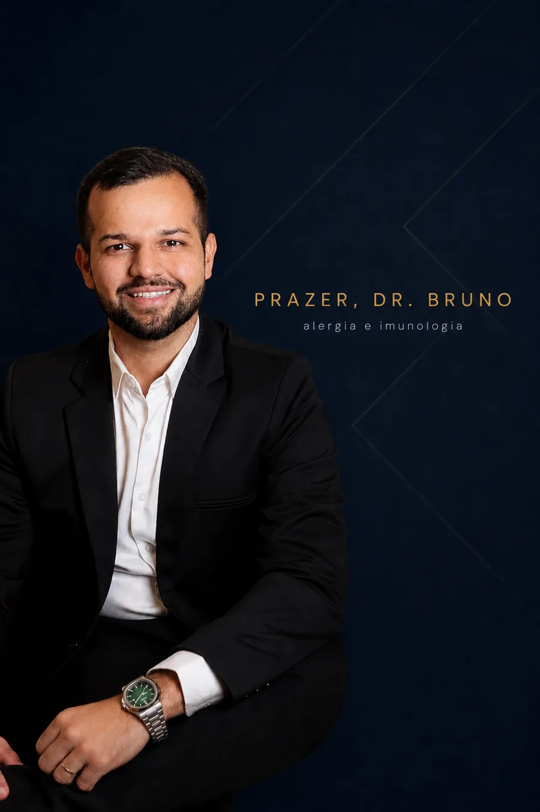
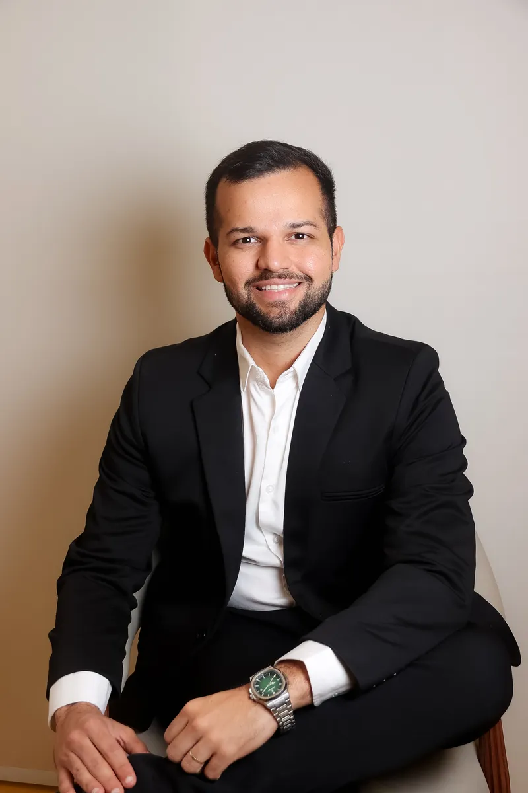
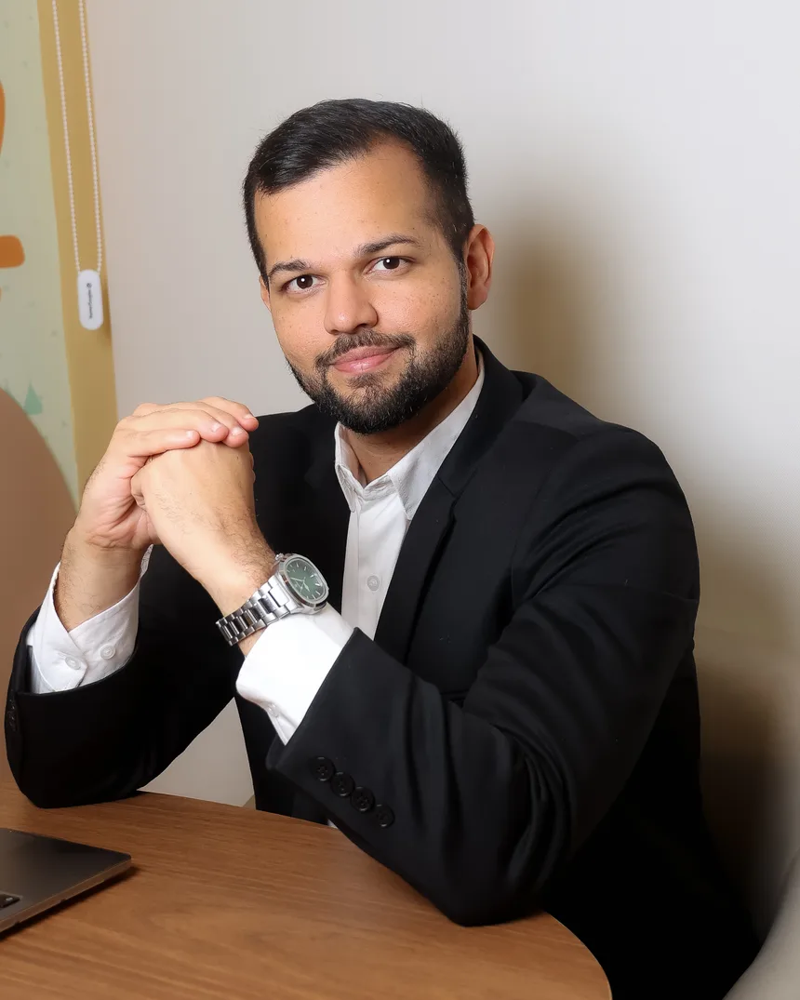
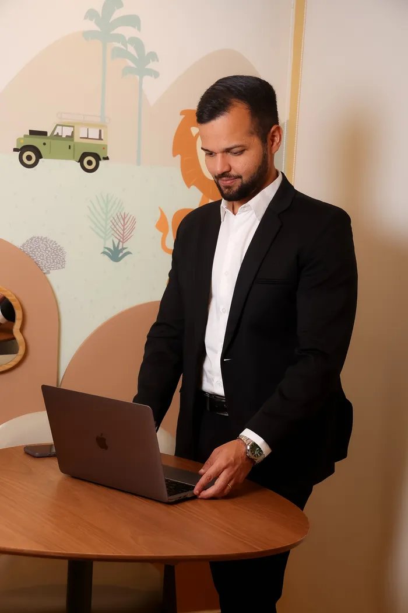

Ajudo famílias a respirarem aliviadas, livres das alergias.
Dr. Bruno William — Especialista em Alergia e Imunologia Pediátrica com residência pela UNIFESP — Escola Paulista de Medicina. Atendimento em São Paulo com encaixe rápido para quadros agudos — teleconsulta disponível para retornos e pacientes de outras cidades.
Investigação com testes alérgicos e anamnese detalhada


Dr. Bruno William
Lopes de Almeida
A história do Dr. Bruno começa em Teresina, no Piauí, onde se formou em Medicina e presidiu a Liga de Pediatria — foi ali que ele soube que a vida dele seria cuidar de crianças. Com o diploma na mão, atravessou o país para se formar nas escolas mais exigentes da especialidade: a residência em Pediatria no Hospital Infantil Cândido Fontoura e a especialização em Alergia e Imunologia Pediátrica na UNIFESP — Escola Paulista de Medicina, serviço de referência nacional.
Foi nos plantões de pronto-socorro infantil que a alergia o escolheu: crianças voltando repetidas vezes com crises de asma, reações na pele e alergias alimentares — e pais exaustos, sem respostas. O Dr. Bruno decidiu ser o médico que investiga até o fim. Por isso as consultas duram cerca de 1 hora: tempo de ouvir a história completa, examinar com calma e sair com um plano claro.
Hoje atende crianças e adultos nas unidades Livance Tatuapé e Livance Ibirapuera, com agenda aberta para encaixe rápido em quadros agudos — crise de asma, reação alérgica, piora de dermatite — além de teleconsulta para retornos e pacientes de outras cidades, sempre com investigação baseada em testes alérgicos e anamnese detalhada.

Formação construída nas principais escolas de medicina do país
Cada etapa da formação foi dedicada a um objetivo: cuidar de crianças com alergias e dos seus pais com técnica, ciência e acolhimento.
Graduação em Medicina
UNINOVAFAPI — Teresina, PI. Presidente da Liga de Pediatria e do Centro Acadêmico de Medicina durante a graduação.
Residência em Pediatria
Hospital Infantil Cândido Fontoura — São Paulo, SP · RQE 140654
Residência em Alergia e Imunologia Pediátrica — UNIFESP
Escola Paulista de Medicina, serviço de referência terciária na especialidade. Testes cutâneos, provocações orais, imunoterapia e imunobiológicos · RQE 1406541
Trabalho apresentado na ASBAI
"Odisseia Diagnóstica dos Erros Inatos da Imunidade" — Congresso da Associação Brasileira de Alergia e Imunologia, 2025.
Consultório em São Paulo e teleconsulta
Atendimento de crianças e adultos com doenças alérgicas e imunológicas nas unidades Tatuapé e Ibirapuera. Também atua como coordenador médico de pronto-socorro infantil na Rede D'Or São Luiz.
O que trato
Diagnóstico e tratamento completo das principais condições alérgicas e imunológicas em crianças e adultos.
Rinite Alérgica
Diagnóstico, investigação de alérgenos e tratamento personalizado, incluindo imunoterapia.
Asma
Avaliação completa, controle dos sintomas e acompanhamento especializado para asma em crianças.
Dermatite Atópica
Tratamento especializado para eczemas e dermatites em bebês e crianças.
Alergia Alimentar · APLV
Investigação e manejo completo de alergias às proteínas do leite de vaca e outros alimentos.
Imunoterapia
Vacinas de dessensibilização para alérgenos inaláveis, alimentares e de insetos.
Urticária
Investigação profunda para urticária aguda e crônica, com tratamento e acompanhamento.
Testes Alérgicos
Identificação dos alérgenos por testes precisos, como o Prick Test cutâneo.
Imunodeficiências
Diagnóstico e acompanhamento de erros inatos da imunidade em crianças.
Uma consulta sem pressa, do primeiro contato ao acompanhamento
Contato pelo WhatsApp
Você fala com a equipe do Dr. Bruno, tira dúvidas e escolhe a unidade e o melhor horário.
Consulta de 1 hora
Anamnese detalhada de sintomas, histórico familiar de alergia e exposição ambiental, exame físico completo e análise de exames anteriores.
Investigação e diagnóstico
Quando necessário, testes alérgicos e exames direcionados para identificar a causa com precisão.
Plano e acompanhamento
Tratamento personalizado, orientações por escrito e acompanhamento próximo da evolução.
Seu filho merece o melhor cuidado.
Fale agora com a equipe do Dr. Bruno e verifique a disponibilidade para a primeira consulta.
Verificar disponibilidade no WhatsAppFamílias que respiram aliviadas.
Veja o que pais e responsáveis dizem sobre o atendimento do Dr. Bruno.
"Minha filha tinha rinite desde bebê e nenhum médico conseguia resolver. O Dr. Bruno fez uma investigação completa e em poucos meses ela estava muito melhor. Atendimento humanizado e sem pressa."
"Descobrimos a APLV do nosso bebê com o Dr. Bruno. Ele nos explicou tudo com muito cuidado, passou um plano alimentar e nos deu toda a segurança que precisávamos nesse momento difícil."
"Meu filho tinha crises de asma frequentes. Após iniciar o acompanhamento com o Dr. Bruno, as crises diminuíram muito. Uma consulta de mais de 1 hora, muito diferente do que estávamos acostumados."
Morar longe de São Paulo não é mais um obstáculo
A teleconsulta permite avaliação cuidadosa, orientação clara e o mesmo rigor técnico do atendimento presencial, por plataforma segura e homologada pelo CFM.
- Atendimento para todo o Brasil
- Ideal para retornos e acompanhamentos
- Mesma atenção e tempo de consulta

Dúvidas comuns
O Dr. Bruno atende convênio?
Não, atualmente o atendimento é apenas particular. Isso permite consultas longas e sem pressa, com a atenção que cada paciente precisa. É emitida nota fiscal para você solicitar reembolso ao seu plano de saúde.
Qual o valor da consulta?
A consulta particular custa R$ 500. É emitida nota fiscal para você solicitar reembolso ao seu plano de saúde. Fale pelo WhatsApp para confirmar valores de retorno e teleconsulta.
Qual é a duração média da consulta?
Em média 1 hora, podendo variar conforme as necessidades de cada paciente.
O que devo levar para a primeira consulta?
Todos os exames e documentos médicos relevantes: alta hospitalar ou da maternidade, caderneta de vacinação, relatórios médicos anteriores e resultados de exames de sangue ou testes alérgicos já realizados.
O Dr. Bruno faz teleconsulta?
Sim, para todo o Brasil, por plataforma segura e homologada pelo CFM. Ideal para pacientes de outras cidades ou para retornos e acompanhamentos.
Preciso de encaminhamento para agendar?
Não. A primeira consulta pode ser agendada diretamente, sem necessidade de encaminhamento de outro médico.
O Dr. Bruno trata APLV (alergia à proteína do leite de vaca)?
Sim. O Dr. Bruno oferece investigação completa e manejo clínico da APLV e de outras alergias alimentares, desde bebês até adolescentes.
Atende adultos também?
Sim. O foco principal é o público pediátrico, mas adultos com doenças alérgicas e imunológicas também são atendidos.
Atendimento em São Paulo e online
Escolha a unidade mais próxima ou consulte online. A equipe responde rapidamente pelo WhatsApp.
Livance Ibirapuera
R. Agostinho Rodrigues Filho, 550
Vila Clementino, São Paulo — SP
Teleconsulta
Atendimento online para todo o Brasil
por plataforma homologada pelo CFM
Conteúdo sobre alergias, direto do consultório
Siga o Dr. Bruno no Instagram e receba orientações práticas sobre APLV, asma, rinite e o dia a dia das famílias alérgicas.
Seguir @dr.brunowilliamVamos cuidar do seu filho juntos.
Resposta rápida pelo WhatsApp. Atendimento presencial em São Paulo ou online para todo o Brasil.
Falar com a equipe do Dr. Bruno